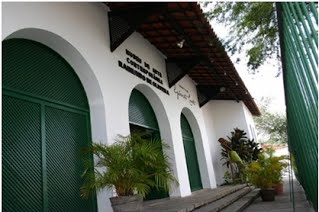

FEIRA CULTURAL
Seguem algumas informações sobre opções de cultura e lazer em Feira de Santana.
Feiraguay
O Feiraguay é considerado o maior centro de comércio informal das regiões norte e nordeste e um dos maiores do Brasil. Lá é possível encontrar, a preços acessíveis, produtos dos mais variados tipos, de eletroeletrônicos a peças de roupa e calçados. Após obras de revitalização, o Feiraguay, que anteriormente era um comércio a céu aberto, hoje possui boxes cobertos e organizados.
Localização: Praça Presidente Médici, Bairro CentroMercado de Arte Popular (MAP)
Museu de Arte Popular (MAP)
O prédio onde hoje funciona o MAP foi construído no início do século XX e, naquele período, abrigava o Mercado Municipal de Feira de Santana. Após seu fechamento e um período de reformas, na década de 1980 o espaço passou a ser utilizado como um centro de comércio de artesanato e espaço para a apresentação de artistas. Além da alta variedade de objetos de artesanato, o MAP também conta com cafés e restaurantes, onde é possível degustar comidas típicas da região.
Localização: Av. Sampaio, S/N (Praça João Pedreira)
Parque do Saber
O Parque do Saber é um museu de ciências e história cultural de Feira de Santana. A estrutura do museu conta com um foyer utilizado para exposições, concertos, congressos, teleconferências e performances teatrais, e com um teatro virtual. A cúpula deste teatro (domo) cobre um auditório com capacidade para 165 pessoas, que pode ser utilizado tanto para apresentações de teatro convencionais quanto para a exibição de vídeos, espetáculos multimídia e apresentações astronômicas (planetário).
Localização: Rua Tupinambá n 275, Bairro São João
Contato: (75) 3624-5058
Site Oficial: www.museuparquedosaber.ba.gov.br
Observatório Antares
O Observatório Astronômico Antares foi inaugurado em 1971 por Augusto César Pereira Orrico. Na década de 1990, foi incorporado à UEFS. Em seus 40 anos de funcionamento, o Observatório vem cumprindo seu papel no ensino, na pesquisa e na divulgação da astronomia, contribuindo, desta forma, para o avanço científico-cultural da região.
Localização: Rua Barra, 925, Bairro Jardim Cruzeiro
Horário de Funcionamento: De segunda-feira à sexta-feira, das 8:00 às 12:00 e das 14:00 às 18:00.
Site Oficial: uefs.br/antares
Casa do Sertão
O Museu Casa do Sertão foi construído em 1978, no campus da UEFS, e tem como objetivo a preservação da história e das tradições da cultura sertaneja e, consequentemente, da própria Feira de Santana. Visando incentivar a preservação e a realização de pesquisas sobre a região, o Museu incorporou o Centro de Estudos Feirenses e o Centro de Pesquisa e Documentação de Feira de Santana.
O Museu conta com um acervo de cerca de 500 peças, em sua maioria referentes à ocupação dos sertões pelo gado e ao artesanato popular da região. Também possui acervo fonográfico que registra a cultura musical local, incluindo uma coleção de discos que datam do início da carreira de Luiz Gonzaga. Já o acervo bibliográfico é composto de livros, periódicos e documentos sobre antropologia, religião, sociologia e história de Feira de Santana e região, como também de literatura de cordel, folclore e cultura popular.
Localização: Campus UEFS
Horário de Funcionamento: De segunda-feira à sexta-feira, das 8:00 às 11:45 e das 14:00 às 17:45
Contato: (75) 3224.8099/3224.8029
Site Oficial: uefs.br/sertao
Museu de Arte Contemporânea
As dependências do Museu de Arte Contemporânea Raimundo Oliveira (MAC) antigamente abrigavam o Museu Regional de Feira de Santana, criado pelo empresário Assis Chateaubriand. Na década de 1990, após a transferência do acervo do antigo Museu para o Cento Universitário de Cultura e Arte (CUCA), o prédio foi restaurado e adaptado para a criação do MAC. Contando com um acervo de 58 obras dos mais representativos artistas plásticos baianos, o MAC trabalha basicamente com a produção artística do nosso tempo. Não se limita a exposição de um acervo [físico]?, realizando exposições mensais das mais variadas expressões artísticas, além de promover eventos e propostas educativas voltadas para a comunidade.
Localização:Rua Geminiano Costa, 255, Bairro Centro
Horário de Funcionamento: De segunda à sexta, das 8h às 17h e aos sábados, das 14h às 17:30
Contato: (75) 3223-7033
Site Oficial: http://macfeira.wordpress.com
CUCA
O Centro Universitário de Cultura e Arte (CUCA) foi fundado em 1995 e é responsável pela gestão das ações culturais da UEFS e abriga o Curso de Licenciatura em Música desta Universidade. O CUCA desenvolve atividades regulares de ensino em diversas linguagens artísticas (música, dança, artes plásticas, teatro, literatura) além da organização de eventos e apoio a manifestações artísticas oriundas da cultura popular.
Localização: Rua Conselheiro Franco, 66, Bairro Centro
Contato: (75) 3221-9766
Site Oficial: http://sites.uefs.br/portal/sites/cuca/
Shopping Boulevard

O Shopping Boulevard foi inaugurado em 1999 e é o maior e mais moderno Shopping do interior da Bahia. O shopping foi planejado de tal forma que utiliza iluminação natural em boa parte do dia, reduzindo de forma considerável o consumo de energia elétrica. Conta com cerca de 170 lojas, salas de cinema e praça de alimentação.
Localização: Av. João Durval Carneiro, nº 3.665, Bairro Caseb
Horário de Funcionamento: de Segunda a Sábado, das 10h às 22h. Domingos e feriados, das 14h às 20h.
Site Oficial: http://boulevardfeira.com.br/